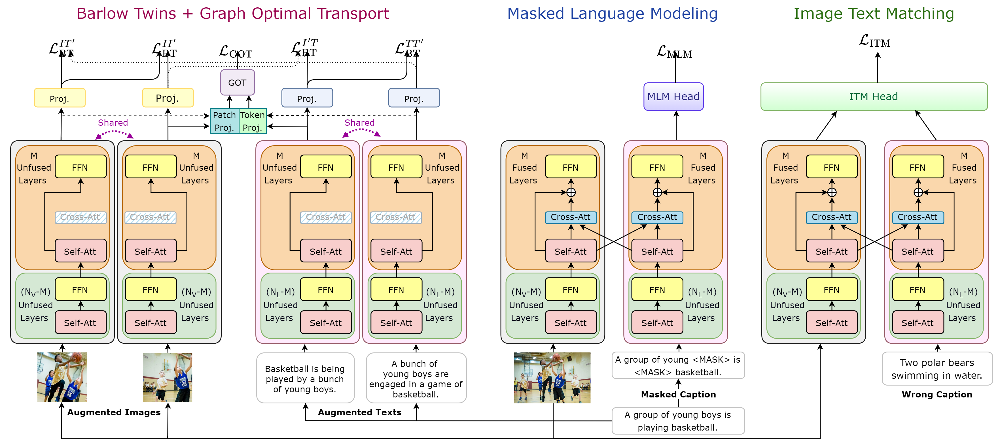
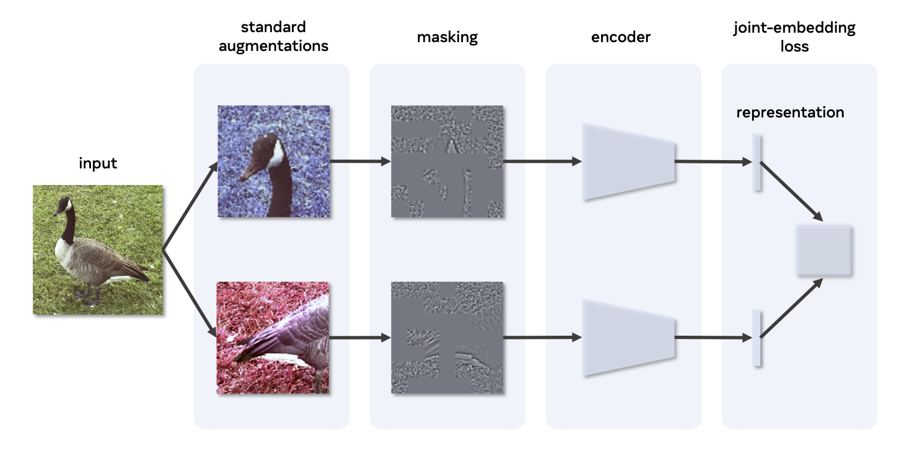
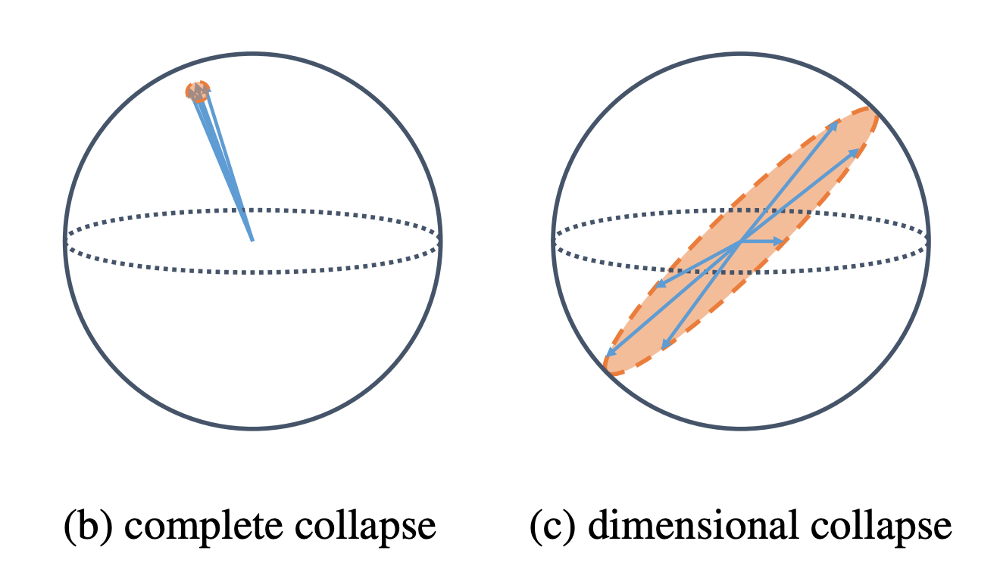
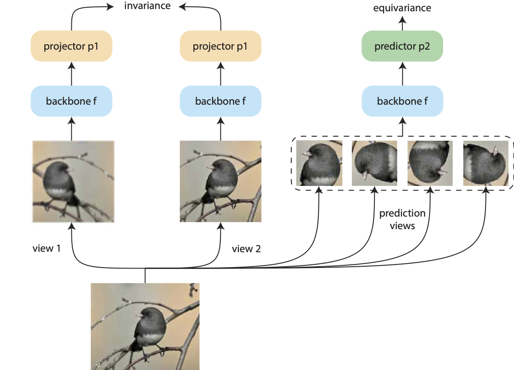
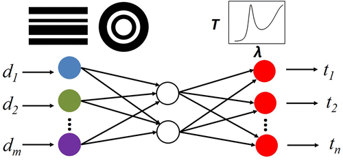
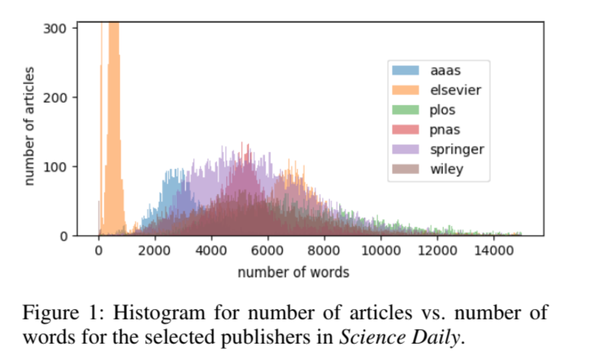

I am a researcher at OpenAI, working on multimodal learning.
I did my postdoc at Meta AI / Facebook AI Research (FAIR), working with Yann LeCun on self-supervised visual representation learning. I obtained my PhD in physics from MIT, advised by Marin Soljacic. During my PhD, my research was on physics-inspired neural networks and AI for science. Previously, I received a BS in physics and a BA in economics from Peking University. I am a co-founder of Lightelligence Inc.

VoLTA: Vision-Language Transformer with Weakly-Supervised Local-Feature Alignment
Shraman Pramanick*, Li Jing*, Sayan Nag*, Jiachen Zhu, Hardik Shah, Yann LeCun, Rama Chellappa
arXiv: 2210.04135
[PDF]
[Code]

Masked Siamese ConvNets: Towards an Effective Masking Strategy for General-purpose Siamese Networks
Li Jing*, Jiachen Zhu*, Yann LeCun
arXiv: 2206.07700
[PDF]
[Code]

Understanding Dimensional Collapse in Contrastive Self-supervised Learning
Li Jing, Pascal Vincent, Yann LeCun, Yuandong Tian
ICLR 2022
[PDF]
[Code]
[Talk]
[Blog]

Equivariant Self-Supervised Learning: Encouraging Equivariance in Representations
Rumen Dangovski, Li Jing, Charlotte Loh, Seungwook Han, Akash Srivastava, Brian Cheung, Pulkit Agrawal, Marin Soljacic
ICLR 2022
[PDF]
[Code]
[Talk]

Barlow Twins: Self-Supervised Learning via Redundancy Reduction
Jure Zbontar*, Li Jing*, Ishan Misra, Yann LeCun, Stephane Deny
ICML 2021
[PDF]
[Code]
[Talk]

Implicit Rank-Minimizing Autoencoder
Li Jing, Jure Zbontar, Yann LeCun
NeurIPS 2020
[PDF]
[Code]
[Talk]

Deep learning enabled self-adaptive invisibility cloak
Chao Qian, Bin Zheng, Yichen Shen, Li Jing, Erping Li, Lian Shen, Hongsheng Chen
Nature Photonics 2020
[PDF]
[News]

Heuristic Recurrent Algorithms for Photonic Ising Machines
Charles Roques-Carmes, Yichen Shen, Cristian Zanoci, Mihika Prabhu, Fadi Atieh, Li Jing, Tena Dubcek, Vladimir Ceperic, John Joannopoulos, Dirk Englund, Marin Soljacic
Nature Communications 2020
[PDF]
[News]

Migrating knowledge between physical scenarios based on artificial neural networks
Yurui Qu*, Li Jing*, Yichen Shen, Min Qiu, Marin Soljacic
ACS Photonics 2019
[Paper]

Nanophotonic Particle Simulation and Inverse Design Using Artificial Neural Networks
John Peurifoy, Yichen Shen, Li Jing*, Yi Yang, Fidel Cano-Renteria, Brendan Delacy, John Joannopoulos, Max Tegmark, Marin Soljacic
Science Advances 2018
[PDF]
[News]
[Code]

We Can Explain Your Research in Layman’s Terms: Towards Automating Science Journalism at Scale
Rumen Dangovski, Michelle Shen, Dawson Byrd, Li Jing, Desislava Tsvetkova, Preslav Nakov, Marin Soljacic
AAAI 2021
[Paper]

Vector-Vector-Matrix Architecture: A Novel Hardware-Aware Framework for Low-Latency Inference in NLP Applications
Matthew Khoury, Rumen Dangovski, Longwu Ou, Preslav Nakov, Yichen Shen, Li Jing
EMNLP 2020
[PDF]

Rotational Unit of Memory: A Novel Representation Unit for RNNs with Scalable Applications
Rumen Dangovski*, Li Jing*, Marin Soljacic
TACL (presented at NAACL) 2019
[PDF]
[News]
[Code]

Gated Orthogonal Recurrent Units: On Learning to Forget
Li Jing*, Caglar Gulcehre*, John Peurifoy, Yichen Shen, Max Tegmark, Marin Soljacic, Yoshua Bengio
Neural Computation 2019
[Paper]
[Code]

Tunable Efficient Unitary Neural Networks (EUNN) and their application to RNNs
Li Jing*, Yichen Shen*, Tena Dubcek, John Peurifoy, Scott Skirlo, Yann LeCun, Max Tegmark, Marin Soljacic
ICML 2017
[PDF]
[Code]
[Talk]